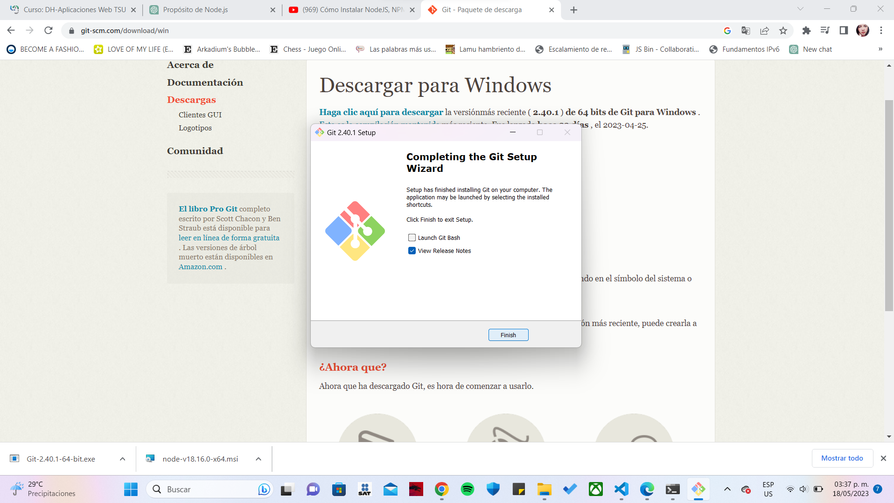

| Contenido | |
|---|---|
| Proposito del software | Proceso de instalacion |
| Video De Instalacion (auxiliar) | Evidencia de Instalacion |
El propósito de Git es proporcionar un sistema de control de versiones eficiente y flexible que permita a los desarrolladores colaborar, realizar un seguimiento de los cambios, gestionar ramas de desarrollo, mantener un historial completo y garantizar la seguridad y redundancia en el desarrollo de proyectos de software.
Puedes apoyarte de este video para instalar GIT
Esta es mi evidencia de instalacion
